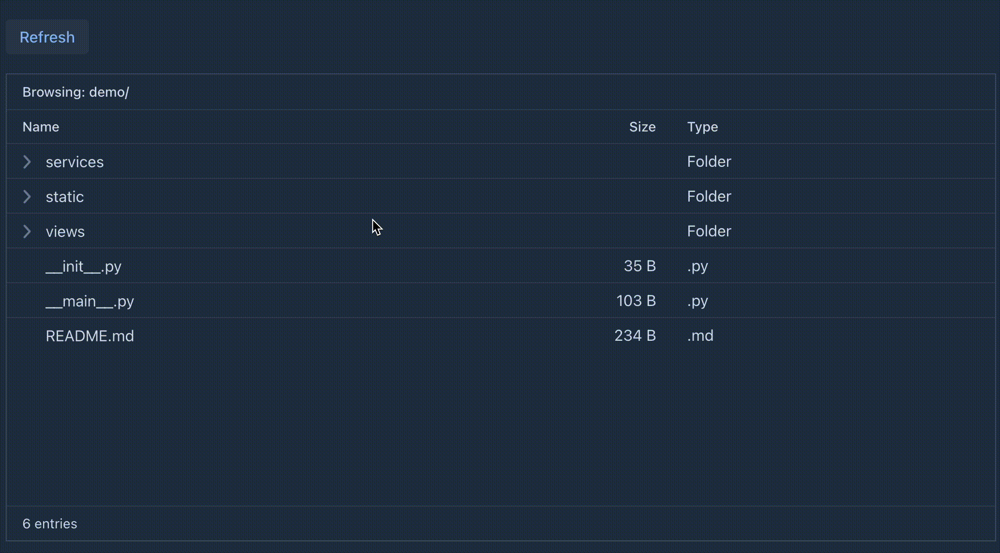

PyFlow
Build Web Apps in Pure Python
No JavaScript. No HTML. Just Python.
"Look for the essence of the problem"
"A complex system that works is invariably found to have evolved from a simple system that worked." — John Gall
- I saw Dan North's talk at Jfokus: Best Simple System for Now
- His idea: don't ask what is there — ask what should be there
- So I looked at Vaadin Flow's 25 years of Java code...
- ...and asked: what is the essence?
Why Python? Why Now?
"The most popular language in the world has no full-stack web framework"
The Architecture

The browser is a thin client. All logic runs on the server.
Secure by Architecture
Zero Attack Surface
No REST APIs to exploit. No GraphQL endpoints. The WebSocket protocol is opaque and binary.
One Team, One Language
Full-stack Python. No JS specialists, no API contracts, no serialization layer.
Server-side State
All validation, all business logic, all data access — stays on the server. Nothing sensitive in the browser.
Hello World
@Route("hello")
class HelloView(VerticalLayout):
def __init__(self):
name = TextField("Your name")
button = Button("Say hello", lambda e:
Notification.show(f"Hello {name.value}"))
self.add(name, button)

7 lines. A complete interactive web view.
49 Enterprise Components

Form fields, grids, dialogs, menus, trees, charts — all from Python
Data Grid
self.db = PersonService()
grid = Grid()
grid.add_column("name", header="Name").set_sortable(True)
grid.add_column("email", header="Email")..set_sortable(True)
/...
grid.set_data_provider(self.fetch_page)
def fetch_page(self, offset, limit, sort_orders):
return self.db.query(offset, limit), db.count())

Lazy loading, server-side sorting, single callback.
Master-Detail

binder = Binder(Person)
binder.bind_instance_fields(self)
def on_save(self, event):
binder.write_bean(self.person)
service.save(self.person)
Grid + Form + Binder + Validation — the enterprise CRUD pattern.
Real-time Push
@AppShell
@Push
class App: pass
async def _tick(self):
while self._running:
await asyncio.sleep(1)
self._elapsed += 1
ui.access(self._update_display)

Server pushes UI updates via WebSocket. No polling.
@ClientCallable

@ClientCallable
def open(self, key):
item = self.tree_grid.get_item(key)
subprocess.Popen(
["open", item["path"]])
Browser calls server methods directly. No REST API needed.
Porting 25 Years of Java in 6 Weeks
"Write specs first, let AI generate code. Separate thinking from doing." — Arun Gupta
- Reverse-engineered Java Flow: StateTree, UIDL protocol, Feature IDs
- Wrote language-agnostic specs → AI agents generated Python from specs
- 28 pitfalls documented — each one saves days of debugging
The Spec-Driven Loop
6. Back to step 1 ← 5. Discover pitfall ← 4. Tests validate
28 pitfalls documented. Each one saves days of debugging.
The specs are reusable — the same specs could port Flow to Rust, Go, or any language.
Developer Experience
pip install vaadin-pyflow
Get Started in 30 Seconds
pip install vaadin-pyflow
vaadin init myapp
cd myapp && vaadin --dev
Thank You
"Look for the essence of the problem — not what is there, but what should be there." — Dan North
GitHub · Documentation · PyPI